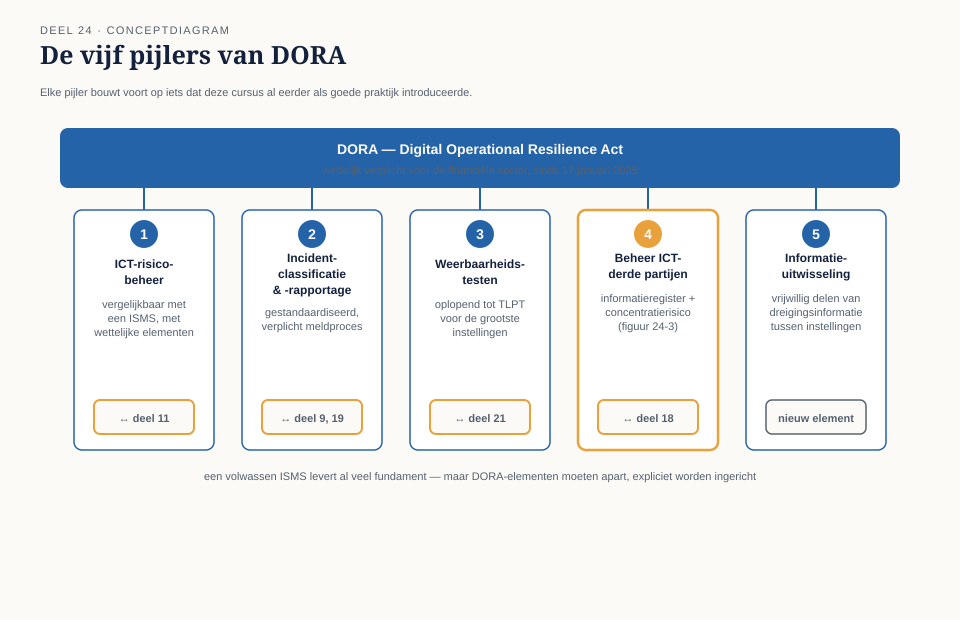
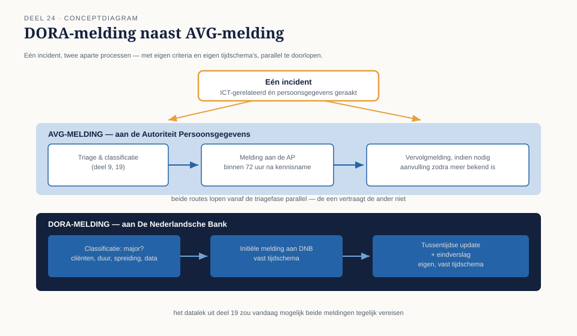
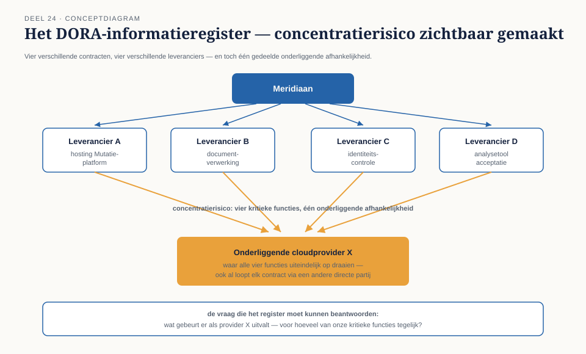

Deel 24 — DORA
Slidedeck · Ductus-cursus Informatiebeveiliging en privacy · niveau 3 · deel 24 van 30 · 24 slides
Slide 1 — Titel
Informatiebeveiliging en Privacy
Deel 24 · Niveau 3 · Expert
DORA
Slide 2 — Het formulier dat niemand kon invullen
DNB-uitvraag: alle contracten met ICT-derde partijen.
Kritiek of belangrijk? Concentratierisico's?
Merel: "Dit lijkt op onze administratie — maar het gaat verder."
Slide 3 — Digital Operational Resilience Act
Van toepassing sinds 17 januari 2025.
Geen vrijwillige norm — een wettelijke verplichting.
Slide 4 — Vijf pijlers

- ICT-risicobeheer
- Incidentclassificatie en -rapportage
- Weerbaarheidstesten
- Beheer van ICT-derde partijen
- Informatie-uitwisseling
Slide 5 — Opdracht 24.1
Vier activiteiten. Welke pijler?
Slide 6 — "We zijn ISO 27001, dus DORA-compliant"
Niet automatisch waar.
Slide 7 — Overlap, geen vervanging
ISO 27001: breed, vrijwillig gekozen.
DORA: specifieke, verplichte elementen — zoals het informatieregister.
Slide 8 — Opdracht 24.2
Waarom klopt "automatisch compliant" niet? Concreet voorbeeld?
PAUZE
Slide 9 — Incidentclassificatie
Aantal cliënten · duur · geografische spreiding · data-impact
→ "major"? → verplichte melding aan DNB, vast tijdschema.
Slide 10 — Twee parallelle regimes

AVG-melding (AP) + DORA-melding (DNB) — tegelijk mogelijk.
Eigen criteria. Eigen tijdschema's.
Slide 11 — Waarom dit al bij triage moet
Deel 19: triage bepaalt de eerste respons.
Nu: triage moet ook al checken — welke meldroutes spelen hier?
Slide 12 — Opdracht 24.3
Een incident raakt persoonsgegevens én ICT-beschikbaarheid.
Welke twee regimes? Waarom vroeg herkennen?
Slide 13 — Weerbaarheidstesten
Kwetsbaarheidsscans → scenario-tests → TLPT
(dreigingsgestuurde penetratietesten, onafhankelijke testers)
Slide 14 — Proportionaliteit
Niet elke instelling dezelfde diepgang.
Klein fonds ≠ systeemrelevante grote instelling.
Slide 15 — Hetzelfde principe, weer
Screening naar functie (deel 14). Leveranciersdiepgang naar risico (deel 18).
Uitwijkniveau naar RTO (deel 21). En nu: testdiepgang naar omvang.
Slide 16 — Opdracht 24.4
Waarom niet overal dezelfde testdiepgang?
Welk eerder principe herken je hierin?
Slide 17 — Het informatieregister

Alle ICT-derde partijen. Kritiek of belangrijk?
En: concentratierisico.
Slide 18 — Wat deel 18 niet zag
Elke leverancier apart beoordeeld: prima.
Drie leveranciers, één onderliggende cloudprovider: verborgen risico.
Slide 19 — Opdracht 24.5
Drie leveranciers, één gedeelde afhankelijkheid.
Waarom ziet een aparte beoordeling dit niet?
Slide 20 — Het Nederlandse landschap
DNB: SBA-Cyberweerbaarheid (DORA-plichtig) of SBA-IB (overig).
Cyberbeveiligingswet: sinds 15 augustus 2026, breder dan alleen financiële sector.
Slide 21 — In volle beweging
Meerdere regimes tegelijk mogelijk.
Elk met een eigen toezichthouder.
Controleer altijd de actuele stand.
Slide 22 — Opdracht 24.6
Waarom is deze waarschuwing hier extra relevant?
Slide 23 — Terug naar het formulier
Niet AVG-gedreven. DORA-gedreven.
Organisatiebreed, niet per leverancier.
Slide 24 — Vooruitblik
Deel 25: toezicht en aantoonbaarheid —
DNB en AP als twee toezichthouders, twee talen